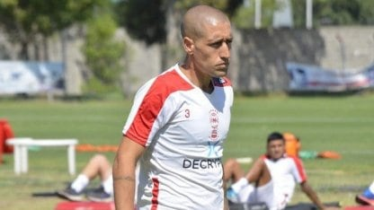

Santiago Hezze
Santiago Hezze es un futbolista profesional argentino que juega como mediocampista en Huracan

Federico Fattori
Federico Fattori es un futbolista profesional argentino que juega como mediocampista en Huracan

Matias Coccaro
Matias Coccaro es un futbolista profesional uruguayo que juega como delantero en Huracan